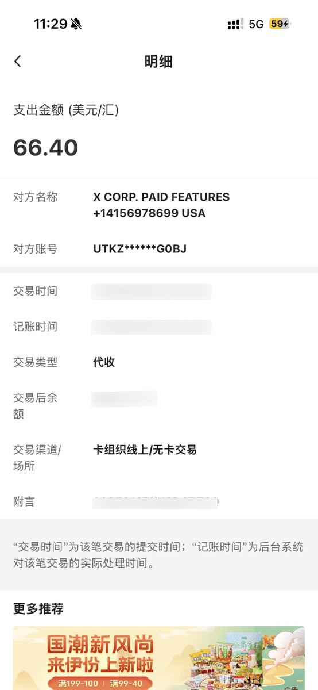
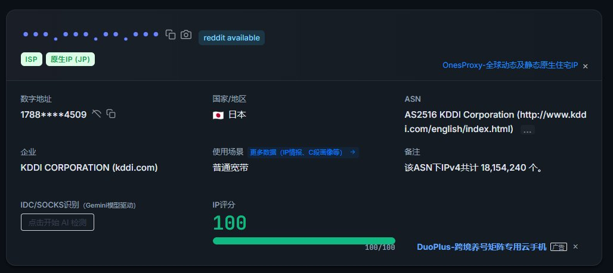
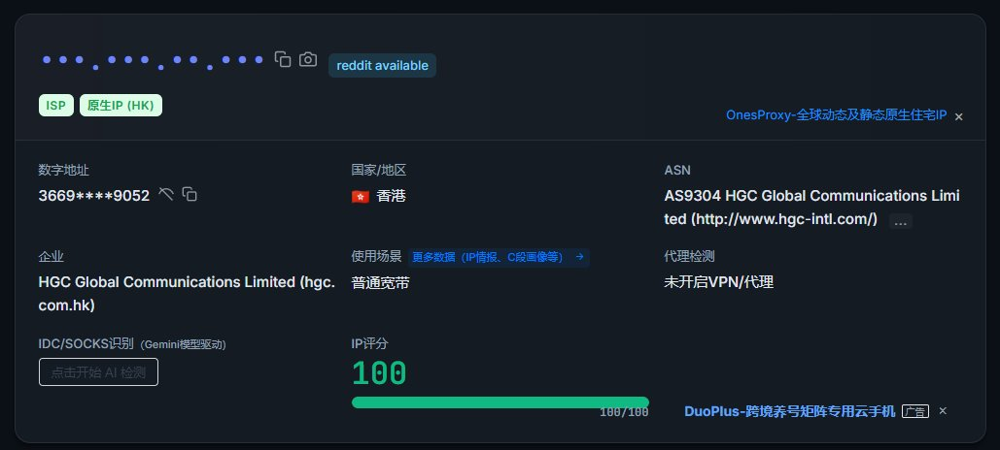

たたなこ
@tatanakots
@snzkYuurei 我也是用自建节点，能用莫奈支付premium（前两年我的premium都是莫奈付的）
不过莫奈有个缺点，一天之内这张卡付过很多笔海外支付的款项的话银行（发卡行）会拒付，过一天就好了



篠崎 幽怜
@snzkYuurei
@tatanakots 感觉是莫奈卡的问题，我的莫奈卡除了香港麦麦之外，就没见过支付成功的🥲
代理都是整vps自建的，落地还套了家宽，理论上网络还蛮干净的 https://t.co/S9SqHzBR16